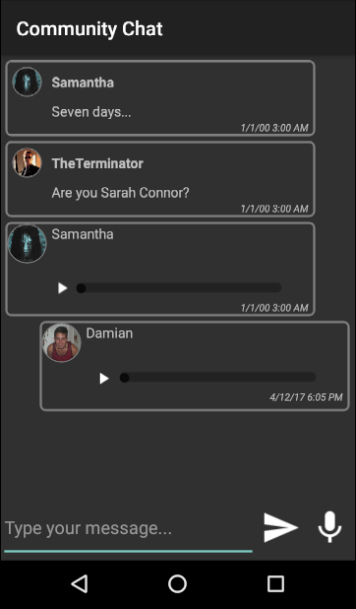

The AudioRecoder external object is a simple API that helps you record and save audio as a file.
PropertiesIsRecording propertyIndicates whether the device is currently recording (True) or not (False). MethodsNote: This API defines two methods to be called in batch mode (no UI is presented to the user).
Start methodStarts an audio recording session and returns whether the operation was successful or not (e.g. if there is another recording in progress, it will return False). The audio recorded will be saved to a local file. The recorded file path is returned by the Stop method (see bellow), and it can be assigned to an Audio-based attribute or variable.
Stop methodStops the current audio recording session and returns the file path where the audio file was saved. Multiple calls to this method do not have any effect.
EventsIt does not have any. ExampleNote: This sample does not include details on how to handle the UI customization aspects.
Suppose a simple scenario of a community chat. Nowadays, every messaging system has two main components:
Event 'SendTextMessage'
Composite
SendTextMessage(&Text,&Username)
Refresh
EndComposite
EndEvent
Basically, the SendTextMessage procedure receives the message to send (&Text variable, it must be inout) and the username (&Username variable), performs the necessary checks and then sends the message and cleans the &Text variable. Now suppose we want to incorporate a third component: the ability to send audio messages. There are two things we need to do to implement this feature.
Event 'StartRecording'
Composite
&HasSuccess = AudioRecorder.Start()
If not &HasSuccess
msg("For some reason we couldn't start recording")
EndIf
EndComposite
EndEvent
This button should be hidden once the operation is completed successfully, and another button should be displayed to stop the current recording process (as it is described in the following point).
Event 'StopRecording'
Composite
&IsRecording = AudioRecorder.IsRecording
If &IsRecording
&FilePath = AudioRecorder.Stop()
&Audio.AudioURI = &FilePath
SendAudioMessage(&Audio,&Username)
Refresh
EndIf
EndComposite
EndEvent
The SendAudioMessage procedure is analogous to the SendTextMessage procedure. Remember that this button was shown once the end user taps on the 'StartRecording' button. For that reason, it is not possible that the 'StopRecording' event has been called without having started a recording previously. Nevertheless, in this case, we prefer to include a validation step to avoid the problem of sending an empty audio message (because the Stop method does not have effect when there is not an audio recording). Also, to be consistent, the developer must hide this button if the operation was successful and must display the button that allows the end user to start a new recording. After applying these concepts and by adding a friendly custom UI, a developer can achieve the following results.  Notes
Scope
AvailabilityThis external object is available as from GeneXus 15 Upgrade 4.
|
| Backlinks | |
| Background Modes property | GeneXus Core module |
| Purpose Strings properties group | Category:Smart Devices API |